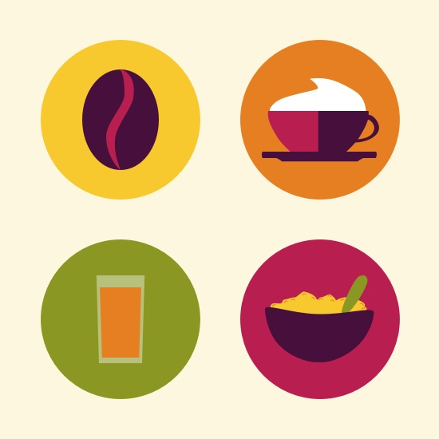

I am a UX Designer, UI Designer, problemsolver, idea creator, feedback encoder and much, much more. In all my work I combine design with psychological insights to create a great user experience.
Aside from work I like to draw and sketch. Some of the outcome you can find here or on my instagram account.
Currently, I live in Stuttgart, Germany, but love to travel the world. Starting summer 2016, me and my handsome husband are going to start our next adventure. After selling almost all our stuff we start to travel the world while working on projects for clients, but also on some ideas of our own.